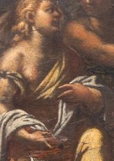
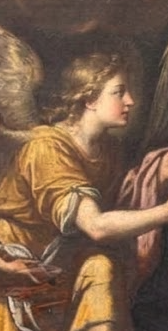

Can you spot the original artwork detail versus the AI restorations? Click your choice below:
Compare the authentic detail with the AI restoration attempts side-by-side:
Original Detail

Authentic Painting
Shows the original figure holding the white drapery with warm, aged brushstrokes.
AI Detail A
First AI Attempt
Observation: The AI reconstructed a group of multiple praying angel heads in the background clouds.
AI Detail B

Refined AI Result
Observation: The AI created a single angel in profile with golden robes and wings facing right.
This second case study analyzes the restoration of a Baptism of Christ masterpiece. The white masked area on the left posed a challenge for AI inpainting: should it reconstruct multiple celestial angels or a single attendant angel holding Christ's garments?
📍 Artwork Location & Metadata
Title: Battesimo di Cristo (Baptism of Christ)
Location: Milano, Italia (Collezione d'Arte Storica / Restauro)
Subject: St. John the Baptist, Christ in Prayer, Celestial Angels